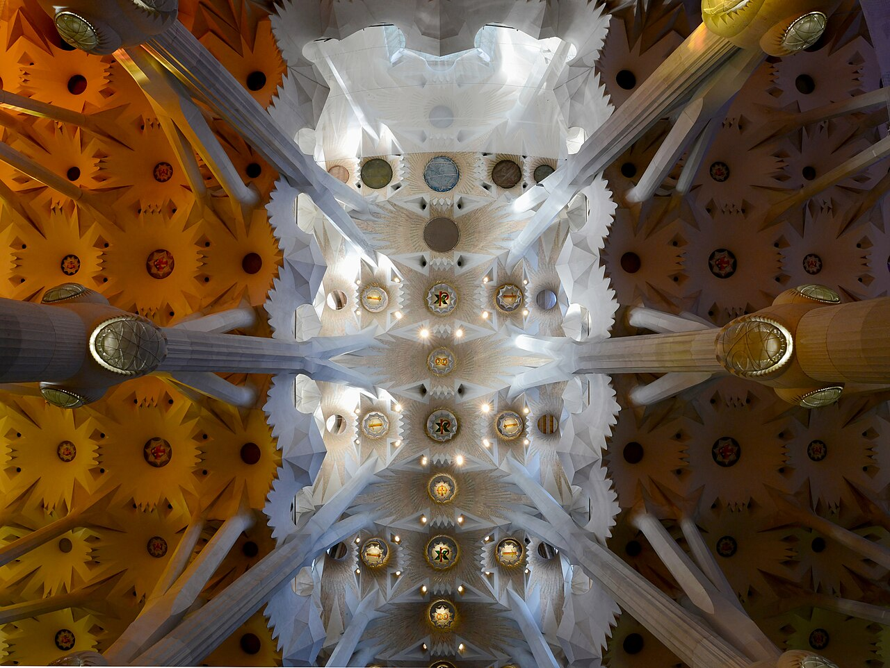
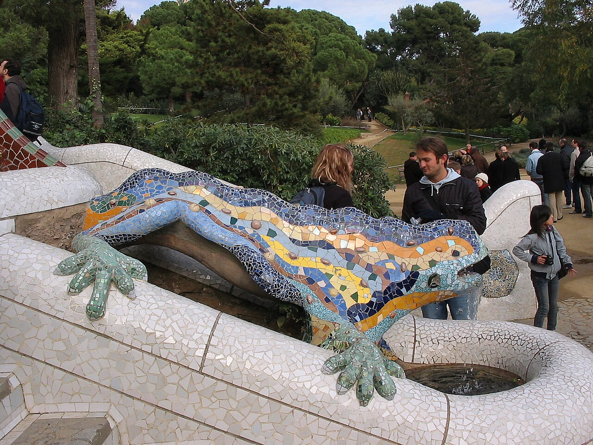

自然を「写す」のではなく、仕組みを借りる
アントニ・ガウディ（1852–1926）は、木の枝が荷重を分ける姿、骨の軽さ、貝殻の曲面などを建築へ翻訳しました。柱や壁を装飾として見るより、「力がどこへ流れるか」を追うと建物が急に読みやすくなります。
Architecture · Art · Old towns
予約に必要な実用情報と、現地で見るべき物語を分けた家族のための観光図鑑。
上段に料金・営業時間・予約条件、下段に歴史や見どころを掲載。実用情報は公式サイトを2026年7月21日に再確認し、2027年の営業など未発表事項は「再確認」としました。
アントニ・ガウディ（1852–1926）は、木の枝が荷重を分ける姿、骨の軽さ、貝殻の曲面などを建築へ翻訳しました。柱や壁を装飾として見るより、「力がどこへ流れるか」を追うと建物が急に読みやすくなります。
逆さ吊り模型や立体模型で構造を探り、職人と現場で形を詰めるのがガウディ流。グエル公園、カサ・バトリョ、ラ・ペドレラ、サグラダ・ファミリアを順に見ると、自然の形が都市住宅から巨大聖堂へ発展する過程を楽しめます。

Photo: Alvesgaspar / Wikimedia Commons · CC BY-SA 4.0
入口では「生誕のファサード」の生命感と「受難のファサード」の削ぎ落とされた彫刻を見比べます。内部は森を思わせる分岐柱、東西で色温度が変わるステンドグラス、双曲面が作る天井の光に注目。2026年は聖堂完成100周年ではなくガウディ没後100年で、同年に高さ172.5mのイエス・キリストの塔外観が完成しました。

Photo: Ludvig14 / Wikimedia Commons · CC BY-SA 3.0
骨のような柱、仮面のようなバルコニー、竜の背を思わせる屋根から「骨の家」とも呼ばれます。中央吹き抜けのタイルが上ほど濃い青になるのは、どの階にも均等な明るさを届けるため。装飾と機能が同じ形に溶けている点を探してみてください。
石切場を意味する愛称どおり、波打つ石の外壁には構造壁がなく、内部の柱で支えています。自由な間取りを可能にした先進性と、屋上の戦士のような煙突群が見どころ。屋根裏の連続アーチは、肋骨や動物の骨格を思わせます。
守護聖人サンタ・エウラリアに捧げられたゴシック聖堂。中庭の13羽のガチョウは、13歳で殉教したという伝承に由来します。壮麗な正面は19世紀の完成で、内部の中世空間との時代差も見どころです。
街を守る要塞である一方、近現代には弾圧の舞台にもなった場所です。眺望だけでなく、海と市街の双方を監視できる立地そのものが城の役割を語っています。
ランブラス通り沿いの市場。入口近くの観光向け商品だけでなく、奥の魚介、肉、乾物売場まで歩くとバルセロナの日常が見えます。混雑前の朝に軽食を取り、荷物を増やしすぎず列車へ向かう計画です。
「のこぎりで切った山」を意味する奇岩群とベネディクト会修道院。黒い聖母「モレネータ」はカタルーニャの守護聖人です。山の丸い岩峰は、ガウディ建築の輪郭を理解する自然の教科書にもなります。
古代ローマの属州都タラコ。円形闘技場は地中海に面し、都市と海の関係が一望できます。水道橋では、モルタルに頼りすぎず石を積んだ構造と、水をわずかな勾配で運ぶローマ土木の精度に注目です。
ラス・メニーナスは鏡と視線をたどり「誰が誰を見ているか」を考える絵。聖三位一体はエル・グレコがスペインで得た最初期の大仕事で、強い色彩と引き伸ばされた形に注目。裸のマハ／着衣のマハはポーズの差だけでなく、同じ女性をめぐる匿名性と異端審問の歴史も対になります。
西ヨーロッパ最大級、3,418室を持つ現役の公式宮殿です。大階段、王座の間、ガスパリーニの間では、王権を伝える空間演出と素材の密度に注目。1/1は休館なので外観と庭園だけにします。
1937年、スペイン共和国政府の依頼でパリ万博のために制作された巨大壁画です。灰色の画面は新聞写真を思わせ、馬、牛、亡くなった子を抱く母などが具体的事件を普遍的な反戦の象徴へ変えています。民主主義回復までスペインへ戻さないというピカソの意思を経て、1981年に帰国しました。
時計塔の12回の鐘に合わせて12粒のブドウを食べるのがスペインの年越し。事前にスーパーで食べやすい缶入りを用意します。元日はソル、マヨール広場、サン・ヒネス、王宮外観を、営業状況に合わせてゆっくり歩きます。
スペイン・ゴシックを代表する大聖堂。主祭壇だけでなく、天井を割って光が降りるように設計されたバロックの「トランスパレンテ」、聖具室のエル・グレコ作品、精緻な聖体顕示台を見ます。内部は撮影禁止です。
画面下の現世と上の天上世界を見比べます。下段の写実的な貴族たちの中にはエル・グレコ本人と息子が描かれ、上段では人物が細長く揺らぎます。二つの世界をつなぐ中央の天使を探すと構図が見えてきます。
エル・グレコ本人の邸宅を保存した施設ではなく、同時代のトレドの家を再構成した美術館です。『トレド景観と地図』や使徒連作を通じ、クレタ生まれの画家がこの古都で独自の細長い人物像と劇的な色彩へ到達した過程を見ます。
枢機卿メンドーサが創設した旧病院で、コバルビアスによるプラテレスコ様式の建築です。エル・グレコを含む絵画だけでなく、考古、装飾美術、陶器を横断してトレドの層の厚い歴史を見られます。
1/4は余裕を優先して7:30タクシーが本案。Aerobúsは代替案として保持します。
写真：Alvesgaspar「Sagrada Familia March 2015-10a.jpg」CC BY-SA 4.0、Ludvig14「ParkGuell Dragon tim.JPG」CC BY-SA 3.0（Wikimedia Commons）。各写真は表示サイズのみ変更しています。
料金・営業時間：各施設の公式サイトおよび公式チケットサイトを2026年7月21日に確認。将来の特別営業・無料枠・交通規制は変更されるため、予約時と訪問前日にリンク先を再確認してください。